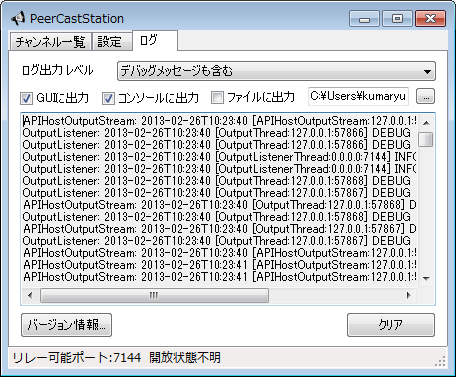

急に起動しなくなった、そんな時は設定ファイルの削除を試してください。
Windows(Vista以降)では
C:\Users\(ユーザ名)\AppData\Roaming\PeerCastStation
に入っています。(ユーザ名)のところはログインしているユーザ名で置き換えてください。削除する場合はPeerCastStationフォルダごと削除してしまってください。
古い設定ファイルは
C:\Users\(ユーザ名)\AppData\Local\PeerCastStation
に入っています。起動しない場合はこちらのファイルに不具合がある可能性があるのでフォルダごと削除してみてください。
Windows以外(mono)では
~/.config/PeerCastStation
に入っています。こちらも削除する時はPeerCastStationディレクトリごと削除してください。
設定ファイルを削除すると当然次回起動時には各種設定が初期値に戻っています。上り帯域などを適切に設定しなおすようにしてください。
GUIのログタブおよびHTML UIのログページではPeerCastStationが出力したログを見ることができます。 基本的にはデバッグ用です。

ログ出力レベルはどのくらい詳しいメッセージを出力するかを選択します。
| なし | ログを一切出力しません。 |
| エラー | 大きなエラーのみを出力します。 |
| エラーと警告 | エラーに加えて警告レベルのメッセージも出力します。 |
| 通知メッセージも含む | エラー・警告に加えてデバッグに役立つ情報メッセージも出力します。 |
| デバッグメッセージも含む | 上記全てに加えてデバッグ用のメッセージを出力します。沢山出ます。 |
GUIに出力のチェックを入れると下のメッセージボックスにログが出力されます。
コンソールに出力のチェックを入れるとコンソールにログが出力されます。外しても出力されそうな気がする上にWindowsでは出ないような気がするんだけど、意味あるのかこれ？
ファイルに出力のチェックを入れると右で指定したファイルにログをひたすら追記します。サイズを気にせず追記しつづけるのでファイルサイズ・容量には気をつけてください。
ライセンスはGPLv3です。 使用しているライブラリ等のライセンスに関しては同梱のLICENSE.txtを見てください。
報告するにもgithubのアカウントが必要ですがそのくらい取りましょう。 連絡が取れないと困るので匿名での報告経路は用意していません。
PeerCastStationの開発を手伝いたいけど何をしていいかわからない、 こんな時はまずPeerCastStationを使って、不具合や不満点があればIssueに上げてください。
コードの改善をしたい場合はgithubでforkしてpull requestを送ってください。